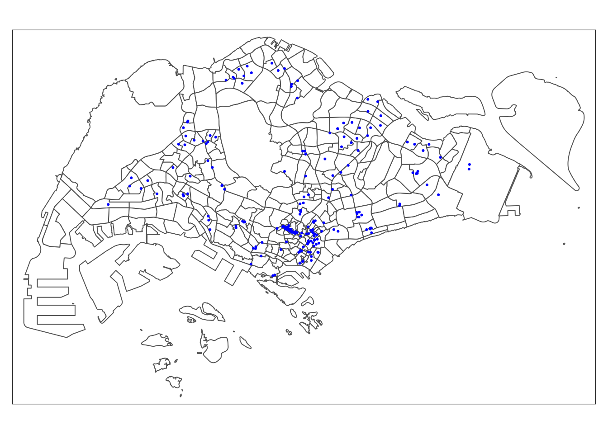

pacman::p_load(sf, sp, spdep, olsrr, SpatialML, tmap, rsample, Metrics, tidyverse, httr, jsonlite, units, matrixStats, corrplot, ggpubr, ggstatsplot, GWmodel)Take-home Exercise 3: Predicting HDB Resale Prices with Geographically Weighted Machine Learning Methods
1 Overview
Housing is an essential component of household wealth worldwide. For most people, buying a home represents one of the largest investments they will make. Housing prices are influenced by a range of factors, some of which are global—such as a country’s economic conditions or inflation rate—while others are specific to individual properties. These factors can be divided into structural and locational categories. Structural factors relate directly to the property itself, including its size, fittings, and tenure. Locational factors, on the other hand, concern the property’s surroundings, such as proximity to childcare centers, public transportation, and shopping centers.
In Singapore, public housing plays a unique and essential role. With over one million flats spanning 24 towns and three estates, the Singapore brand of public housing is uniquely different. These flats are home to more than 80% of Singapore’s resident population, with about 90% of them owning their homes.
Housing prices are influenced by a range of factors, such as amenities and accessibility. In Singapore, HDB flats near MRT stations, bus interchanges, shopping centers, and schools often command higher values due to their convenience. Economic conditions also play a role; when the economy is strong and interest rates are low, buyers have more purchasing power, which increases demand and can drive prices up. Additionally, flat attributes such as size, layout, and lease tenure affect prices, with larger flats or those with longer remaining leases generally being more valuable.
2 The Objective
In this exercise, we will build and calibrate a predictive model to estimate HDB resale prices for the period of July to September 2024, using HDB resale transaction records from 2023.
3 Getting Started
3.1 The Data
| Dataset Name | Description | Format |
|---|---|---|
| Master Plan 2019 Subzone Boundary | Geospatial data representing the boundaries of different areas in Singapore, specifically at the planning subzone level. | ESRI Shapefile |
| HDB Resale data | Aspatial data containing HDB resale transacted prices in Singapore from Jan 2017 onwards. | CSV |
| List of eldercare in Singapore | Geospatial data containing list of eldercare locations in Singapore. | geojson |
| List of hawker centres in Singapore | Geospatial data containing list of hawker centres locations in Singapore. | geojson |
| List of parks in Singapore | Geospatial data containing list of parks locations in Singapore. | geojson |
| List of supermarkets in Singapore | Geospatial data containing list of supermarkets locations in Singapore. | geojson |
| List of CHAS clinics in Singapore | Geospatial data containing list of CHAS clinics locations in Singapore. | geojson |
| List of kindergartens in Singapore | Geospatial data containing list of kindergartens locations in Singapore. | geojson |
| List of supermarkets in Singapore | Geospatial data containing list of supermarket locations in Singapore | geojson |
| List of MRT/LRT stations in Singapore | Geospatial data containing list of MRT/LRT stations locations in Singapore. | ESRI Shapefile |
| List of bus stops in Singapore | Geospatial data containing list of eldercare in Singapore. | ESRI Shapefile |
| List of primary school in Singapore | Aspatial data containing list of primary schools in Singapore. | CSV |
| CBD coordinates | Coordinate of Raffles Place MRT | |
| List of shopping malls in Singapore | Aspatial data containing list of shopping malls in Singapore. | CSV Updated manually from Source with latest data. |
| List of primary schools in Singapore | Aspatial data containing list of primary schools in Singapore | JSON |
| Good primary schools | Aspatial data containing list of top 20 primary schools from https://schlah.com/. | CSV |
| List of hospitals in Singapore | Aspatial data containing list of hospitals in Singapore | CSV |
3.2 The Packages
We will use following packages in this exercise
We will use following packages in this exercise:
| Package | Description |
|---|---|
| sf | Provides functions to manage, process, and manipulate Simple Features, a formal geospatial data standard that specifies a storage and access model of spatial geometries such as points, lines, and polygons. |
| sp | Provides classes and methods for Spatial Data. |
| spdep | Provides a collection of functions to create spatial weights matrix objects from polygon ‘contiguities’, point patterns by distance, and tessellations. |
| tidyverse | A collection of R packages for data science tasks such as importing, tidying, wrangling, and visualizing data. |
| tmap | Provides functions for creating cartographic-quality static maps or interactive maps using the leaflet API. |
| olsrr | A package for building OLS models and performing diagnostic tests. |
| SpatialML | A package that implements a spatial extension of the random forest algorithm. |
| rsample | A package that provides functions to create different types of resamples and corresponding classes for their analysis. |
| Metrics | A package for common machine learning metrics. |
| httr | A package that provides tools for working with URLs and HTTP |
| jsonlite | A simple and robust JSON parser and generator for R |
| units | A package that provides tools to handle and convert measurement units for numeric values. |
| matrixStats | A package that provides optimized functions for common matrix and vector operations. |
| corrplot | A package that provides a visual exploratory tool on correlation matrix. |
| ggpubr | A package that provides easy-to-use functions for creating and arranging ggplot2 plots. |
| ggstatsplot | Provides functions to creates graphics with details from statistical tests included in the plots themselves. |
| GWmodel | A package for calibrating the geographically weighted family of models. |
To install and launch all R packages.
3.3 Data Import
3.3.1 Geospatial Data
Let’s import all geospatial dataset into the R environment.
mpsz <- st_read(dsn = "data/geospatial", layer = "MPSZ-2019") %>%
st_transform(3414)Reading layer `MPSZ-2019' from data source
`/Users/cham/project/Geospatial-Analytics/chrismanafe/ISSS626-GAA/take_home_ex/take_home_ex03/data/geospatial'
using driver `ESRI Shapefile'
Simple feature collection with 332 features and 6 fields
Geometry type: MULTIPOLYGON
Dimension: XY
Bounding box: xmin: 103.6057 ymin: 1.158699 xmax: 104.0885 ymax: 1.470775
Geodetic CRS: WGS 84mpszSimple feature collection with 332 features and 6 fields
Geometry type: MULTIPOLYGON
Dimension: XY
Bounding box: xmin: 2667.538 ymin: 15748.72 xmax: 56396.44 ymax: 50256.33
Projected CRS: SVY21 / Singapore TM
First 10 features:
SUBZONE_N SUBZONE_C PLN_AREA_N PLN_AREA_C REGION_N
1 MARINA EAST MESZ01 MARINA EAST ME CENTRAL REGION
2 INSTITUTION HILL RVSZ05 RIVER VALLEY RV CENTRAL REGION
3 ROBERTSON QUAY SRSZ01 SINGAPORE RIVER SR CENTRAL REGION
4 JURONG ISLAND AND BUKOM WISZ01 WESTERN ISLANDS WI WEST REGION
5 FORT CANNING MUSZ02 MUSEUM MU CENTRAL REGION
6 MARINA EAST (MP) MPSZ05 MARINE PARADE MP CENTRAL REGION
7 SUDONG WISZ03 WESTERN ISLANDS WI WEST REGION
8 SEMAKAU WISZ02 WESTERN ISLANDS WI WEST REGION
9 SOUTHERN GROUP SISZ02 SOUTHERN ISLANDS SI CENTRAL REGION
10 SENTOSA SISZ01 SOUTHERN ISLANDS SI CENTRAL REGION
REGION_C geometry
1 CR MULTIPOLYGON (((33222.98 29...
2 CR MULTIPOLYGON (((28481.45 30...
3 CR MULTIPOLYGON (((28087.34 30...
4 WR MULTIPOLYGON (((14557.7 304...
5 CR MULTIPOLYGON (((29542.53 31...
6 CR MULTIPOLYGON (((35279.55 30...
7 WR MULTIPOLYGON (((15772.59 21...
8 WR MULTIPOLYGON (((19843.41 21...
9 CR MULTIPOLYGON (((30870.53 22...
10 CR MULTIPOLYGON (((26879.04 26...eldercare <- st_read(dsn = "data/geospatial", layer = "ELDERCARE") %>%
st_transform(3414)Reading layer `ELDERCARE' from data source
`/Users/cham/project/Geospatial-Analytics/chrismanafe/ISSS626-GAA/take_home_ex/take_home_ex03/data/geospatial'
using driver `ESRI Shapefile'
Simple feature collection with 133 features and 18 fields
Geometry type: POINT
Dimension: XY
Bounding box: xmin: 14481.92 ymin: 28218.43 xmax: 41665.14 ymax: 46804.9
Projected CRS: SVY21chas <- st_read("data/geospatial/CHASClinics.geojson") %>%
st_transform(crs = 3414)Reading layer `CHASClinics' from data source
`/Users/cham/project/Geospatial-Analytics/chrismanafe/ISSS626-GAA/take_home_ex/take_home_ex03/data/geospatial/CHASClinics.geojson'
using driver `GeoJSON'
Simple feature collection with 1193 features and 2 fields
Geometry type: POINT
Dimension: XYZ
Bounding box: xmin: 103.5818 ymin: 1.016264 xmax: 103.9903 ymax: 1.456037
z_range: zmin: 0 zmax: 0
Geodetic CRS: WGS 84childcare <- st_read("data/geospatial/ChildCareServices.geojson") %>%
st_transform(crs = 3414)Reading layer `ChildCareServices' from data source
`/Users/cham/project/Geospatial-Analytics/chrismanafe/ISSS626-GAA/take_home_ex/take_home_ex03/data/geospatial/ChildCareServices.geojson'
using driver `GeoJSON'
Simple feature collection with 1925 features and 2 fields
Geometry type: POINT
Dimension: XYZ
Bounding box: xmin: 103.6878 ymin: 1.247759 xmax: 103.9897 ymax: 1.462134
z_range: zmin: 0 zmax: 0
Geodetic CRS: WGS 84kindergartens <- st_read("data/geospatial/Kindergartens.geojson") %>%
st_transform(crs = 3414)Reading layer `Kindergartens' from data source
`/Users/cham/project/Geospatial-Analytics/chrismanafe/ISSS626-GAA/take_home_ex/take_home_ex03/data/geospatial/Kindergartens.geojson'
using driver `GeoJSON'
Simple feature collection with 448 features and 2 fields
Geometry type: POINT
Dimension: XYZ
Bounding box: xmin: 103.6887 ymin: 1.247759 xmax: 103.9717 ymax: 1.455452
z_range: zmin: 0 zmax: 0
Geodetic CRS: WGS 84hawker_center <- st_read("data/geospatial/HawkerCentresGEOJSON.geojson") %>%
st_transform(crs = 3414)Reading layer `HawkerCentresGEOJSON' from data source
`/Users/cham/project/Geospatial-Analytics/chrismanafe/ISSS626-GAA/take_home_ex/take_home_ex03/data/geospatial/HawkerCentresGEOJSON.geojson'
using driver `GeoJSON'
Simple feature collection with 125 features and 2 fields
Geometry type: POINT
Dimension: XYZ
Bounding box: xmin: 103.6974 ymin: 1.272716 xmax: 103.9882 ymax: 1.449017
z_range: zmin: 0 zmax: 0
Geodetic CRS: WGS 84parks <- st_read("data/geospatial/Parks.geojson") %>%
st_transform(crs = 3414)Reading layer `Parks' from data source
`/Users/cham/project/Geospatial-Analytics/chrismanafe/ISSS626-GAA/take_home_ex/take_home_ex03/data/geospatial/Parks.geojson'
using driver `GeoJSON'
Simple feature collection with 430 features and 2 fields
Geometry type: POINT
Dimension: XYZ
Bounding box: xmin: 103.6929 ymin: 1.214491 xmax: 104.0538 ymax: 1.462094
z_range: zmin: 0 zmax: 0
Geodetic CRS: WGS 84bus_stops <- st_read(dsn = "data/geospatial", layer = "BusStop") %>%
st_transform(crs = 3414) %>%
filter(lengths(st_within(., mpsz)) > 0)Reading layer `BusStop' from data source
`/Users/cham/project/Geospatial-Analytics/chrismanafe/ISSS626-GAA/take_home_ex/take_home_ex03/data/geospatial'
using driver `ESRI Shapefile'
Simple feature collection with 5166 features and 3 fields
Geometry type: POINT
Dimension: XY
Bounding box: xmin: 3970.122 ymin: 26482.1 xmax: 48285.52 ymax: 52983.82
Projected CRS: SVY21train_stations <- st_read(dsn = "data/geospatial", layer = "RapidTransitSystemStation") %>%
st_transform(crs = 3414) %>%
filter(STN_NAM_DE != "BOCC")Reading layer `RapidTransitSystemStation' from data source
`/Users/cham/project/Geospatial-Analytics/chrismanafe/ISSS626-GAA/take_home_ex/take_home_ex03/data/geospatial'
using driver `ESRI Shapefile'Warning in CPL_read_ogr(dsn, layer, query, as.character(options), quiet, : GDAL
Message 1: Non closed ring detected. To avoid accepting it, set the
OGR_GEOMETRY_ACCEPT_UNCLOSED_RING configuration option to NOSimple feature collection with 230 features and 5 fields
Geometry type: POLYGON
Dimension: XY
Bounding box: xmin: 6068.209 ymin: 27478.44 xmax: 45377.5 ymax: 47913.58
Projected CRS: SVY21supermarkets <- st_read("data/geospatial/SupermarketsGEOJSON.geojson") %>%
st_transform(crs = 3414)Reading layer `SupermarketsGEOJSON' from data source
`/Users/cham/project/Geospatial-Analytics/chrismanafe/ISSS626-GAA/take_home_ex/take_home_ex03/data/geospatial/SupermarketsGEOJSON.geojson'
using driver `GeoJSON'
Simple feature collection with 526 features and 2 fields
Geometry type: POINT
Dimension: XYZ
Bounding box: xmin: 103.6258 ymin: 1.24715 xmax: 104.0036 ymax: 1.461526
z_range: zmin: 0 zmax: 0
Geodetic CRS: WGS 84Notice that some of the data (e.g. chas, childcare) has its dimensions listed as ‘XYZ’, indicating a z-dimension, even though both zmin and zmax are set to 0. We’ll remove this dimension with st_zm() in our pre-processing.
We also filter bus stops points that are located outside of Singapore (e.g. in Johor Bahru Malaysia) using st_within() function.
Although the LTA Data Mall describes the train station data as points, it is actually in polygon format. We’ll address this in our pre-processing steps. Additionally, we’re excluding
BOCCas it is not an MRT/LRT station.
3.3.2 Aspatial Data
Most of our aspatial dataset lacks geocoding information. To address this, we’ll use the following function provided by Prof. Kam, which sends an HTTP request to the OneMap API to retrieve geocoding data.
get_coords <- function(add_list){
# Create a data frame to store all retrieved coordinates
postal_coords <- data.frame()
for (i in add_list){
r <- GET('https://www.onemap.gov.sg/api/common/elastic/search?',
query=list(searchVal=i,
returnGeom='Y',
getAddrDetails='Y'))
data <- fromJSON(rawToChar(r$content))
found <- data$found
res <- data$results
# Create a new data frame for each address
new_row <- data.frame()
# If single result, append
if (found == 1){
postal <- res$POSTAL
lat <- res$LATITUDE
lng <- res$LONGITUDE
new_row <- data.frame(address= i,
postal = postal,
latitude = lat,
longitude = lng)
}
# If multiple results, drop NIL and append top 1
else if (found > 1){
# Remove those with NIL as postal
res_sub <- res[res$POSTAL != "NIL", ]
# Set as NA first if no Postal
if (nrow(res_sub) == 0) {
new_row <- data.frame(address= i,
postal = NA,
latitude = NA,
longitude = NA)
}
else{
top1 <- head(res_sub, n = 1)
postal <- top1$POSTAL
lat <- top1$LATITUDE
lng <- top1$LONGITUDE
new_row <- data.frame(address= i,
postal = postal,
latitude = lat,
longitude = lng)
}
}
else {
new_row <- data.frame(address= i,
postal = NA,
latitude = NA,
longitude = NA)
}
# Add the row
postal_coords <- rbind(postal_coords, new_row)
}
return(postal_coords)
}3.3.2.1 Primary Schools in Singapore
Currently, there is no single source providing downloadable data on primary schools from platforms like data.gov.sg, MOE, or the OneMap API. However, by querying the response from OneMap’s SchoolQueryInfo, we can download the JSON response and read it into R as an sf data frame.
pri_schools <- fromJSON("data/aspatial/onemap_prischools.json")$SearchResults %>%
select(SCHOOLNAME, POSTAL_CODE, LATITUDE, LONGITUDE)
pri_schools <- pri_schools[-1,]
glimpse(pri_schools)Rows: 180
Columns: 4
$ SCHOOLNAME <chr> "ADMIRALTY PRIMARY SCHOOL", "AHMAD IBRAHIM PRIMARY SCHOOL"…
$ POSTAL_CODE <chr> "738907", "768643", "579646", "159016", "544969", "569785"…
$ LATITUDE <chr> "1.44304273982377", "1.43373998459719", "1.36065643548317"…
$ LONGITUDE <chr> "103.800272823634", "103.832709401734", "103.832931644894"…The result contains data for 180 primary schools, missing two schools from the official MOE list, which can be found at MOE School Finder. After a manual cross-check, we identified the missing schools as Kranji Primary School and Pioneer Primary School. Let’s add this one manually to the pri_schools data frame.
missing_schools <- get_coords(c("Kranji Primary School", "Pioneer Primary School")) %>%
rename(SCHOOLNAME = address, POSTAL_CODE = postal, LATITUDE = latitude, LONGITUDE = longitude)
missing_schools$SCHOOLNAME <- toupper(missing_schools$SCHOOLNAME)
primary_schools <- bind_rows(pri_schools, missing_schools)
glimpse(primary_schools)Rows: 182
Columns: 4
$ SCHOOLNAME <chr> "ADMIRALTY PRIMARY SCHOOL", "AHMAD IBRAHIM PRIMARY SCHOOL"…
$ POSTAL_CODE <chr> "738907", "768643", "579646", "159016", "544969", "569785"…
$ LATITUDE <chr> "1.44304273982377", "1.43373998459719", "1.36065643548317"…
$ LONGITUDE <chr> "103.800272823634", "103.832709401734", "103.832931644894"…Let’s convert the primary_schools data frame into an sf data frame using longitude and latitude coordinates, and project it to CRS 3414. We’ll then save it as an RDS file for future use.
primary_schools_sf <- st_as_sf(primary_schools, coords=c("LONGITUDE","LATITUDE"), crs=4326) %>%
st_transform(crs = 3414)
write_rds(primary_schools_sf, "data/rds/primary_schools_sf.rds")primary_schools_sf <- read_rds("data/rds/primary_schools_sf.rds")
primary_schools_sfSimple feature collection with 182 features and 2 fields
Geometry type: POINT
Dimension: XY
Bounding box: xmin: 11777.9 ymin: 28588.52 xmax: 42431.84 ymax: 48729.52
Projected CRS: SVY21 / Singapore TM
First 10 features:
SCHOOLNAME POSTAL_CODE geometry
1 ADMIRALTY PRIMARY SCHOOL 738907 POINT (24322.52 47189.88)
2 AHMAD IBRAHIM PRIMARY SCHOOL 768643 POINT (27932.21 46161.2)
3 AI TONG SCHOOL 579646 POINT (27956.94 38079.99)
4 ALEXANDRA PRIMARY SCHOOL 159016 POINT (26976.8 30415.01)
5 ANCHOR GREEN PRIMARY SCHOOL 544969 POINT (33988.81 41411.98)
6 ANDERSON PRIMARY SCHOOL 569785 POINT (28899.62 40719.89)
7 ANG MO KIO PRIMARY SCHOOL 569920 POINT (28665.38 39021.17)
8 ANGLO-CHINESE SCHOOL (JUNIOR) 227988 POINT (28903.58 32351.07)
9 ANGLO-CHINESE SCHOOL (PRIMARY) 309918 POINT (28265.23 33448.3)
10 ANGSANA PRIMARY SCHOOL 528565 POINT (39752.22 38402.06)3.3.2.2 Good Primary Schools
In Singapore’s Primary 1 (P1) registration, proximity to a school significantly influences admission priority. When a school has more applicants than available spots, priority is based on both the child’s citizenship and their distance from the school. This makes properties around well-regarded schools especially appealing to families, as living nearby can increase their child’s chances of admission. By including the top 20 primary schools from Schlah’s ranking, we would like to find out how access to quality education factors into housing demand.
Since we already have the full list of primary schools with geocoding, we can now filter out the top 20 schools based on the Schlah ranking.
top_20_primary_schools <- c("NANYANG PRIMARY SCHOOL", "TAO NAN SCHOOL", "CATHOLIC HIGH SCHOOL", "NAN HUA PRIMARY SCHOOL", "ST. HILDA'S PRIMARY SCHOOL", "HENRY PARK PRIMARY SCHOOL", "ANGLO-CHINESE SCHOOL (PRIMARY)", "RAFFLES GIRLS' PRIMARY SCHOOL", "PEI HWA PRESBYTERIAN PRIMARY SCHOOL", "CHIJ ST. NICHOLAS GIRLS' SCHOOL", "ROSYTH SCHOOL", "KONG HWA SCHOOL", "POI CHING SCHOOL", "HOLY INNOCENTS' PRIMARY SCHOOL", "AI TONG SCHOOL", "RED SWASTIKA SCHOOL", "MARIS STELLA HIGH SCHOOL", "RULANG PRIMARY SCHOOL", "PEI CHUN PUBLIC SCHOOL", "SINGAPORE CHINESE GIRLS' PRIMARY SCHOOL")
top_20_primary_schools_sf <- primary_schools_sf %>%
filter(SCHOOLNAME %in% top_20_primary_schools)
write_rds(top_20_primary_schools_sf, "data/rds/top_20_primary_schools_sf.rds")top_20_primary_schools_sf <- read_rds("data/rds/top_20_primary_schools_sf.rds")
top_20_primary_schools_sfSimple feature collection with 20 features and 2 fields
Geometry type: POINT
Dimension: XY
Bounding box: xmin: 15245.53 ymin: 31935.11 xmax: 39546.41 ymax: 39607.17
Projected CRS: SVY21 / Singapore TM
First 10 features:
SCHOOLNAME POSTAL_CODE geometry
1 AI TONG SCHOOL 579646 POINT (27956.94 38079.99)
2 ANGLO-CHINESE SCHOOL (PRIMARY) 309918 POINT (28265.23 33448.3)
3 CATHOLIC HIGH SCHOOL 579767 POINT (29162.18 37438.65)
4 CHIJ ST. NICHOLAS GIRLS' SCHOOL 569405 POINT (28101.77 39607.17)
5 HENRY PARK PRIMARY SCHOOL 278790 POINT (22524.4 33238.19)
6 HOLY INNOCENTS' PRIMARY SCHOOL 536451 POINT (34739.9 38763.19)
7 KONG HWA SCHOOL 399772 POINT (34072.8 32603.63)
8 MARIS STELLA HIGH SCHOOL 368051 POINT (33052.36 36084.74)
9 NAN HUA PRIMARY SCHOOL 128806 POINT (20011.61 33542.72)
10 NANYANG PRIMARY SCHOOL 268097 POINT (25223.75 33700.87)3.3.2.3 Shopping Mall in Singapore
The Mall Coordinates Web Scraper repository provides a list of shopping malls in Singapore as of 2019. However, there have been some changes since then, so I manually updated the CSV file in the repository. I cross-referenced the information with Wikipedia’s list of shopping malls in Singapore, added geocoding information for new malls using the Open Map API, and removed malls that have since closed.
Let’s read the CSV file using read_csv(), convert it to an sf object, and transform the CRS to 3414. Finally, we’ll save it in RDS format for future use.
malls <- read_csv("data/aspatial/mall_coordinates_updated.csv") %>%
st_as_sf(coords=c("longitude","latitude"), crs=4326) %>%
st_transform(crs = 3414)
write_rds(malls, "data/rds/malls.rds")malls <- read_rds("data/rds/malls.rds")
mallsSimple feature collection with 199 features and 2 fields
Geometry type: POINT
Dimension: XY
Bounding box: xmin: 10760.28 ymin: 27369.76 xmax: 45400.14 ymax: 47763.06
Projected CRS: SVY21 / Singapore TM
# A tibble: 199 × 3
...1 name geometry
* <dbl> <chr> <POINT [m]>
1 0 100 AM (29129.86 28563.01)
2 1 313@SOMERSET (28485.88 31526.07)
3 2 321 CLEMENTI (20392.39 32702.67)
4 3 600 @ TOA PAYOH (29962.8 35137.08)
5 4 888 PLAZA (23767.99 46536.14)
6 5 ADMIRALTY PLACE (24491.47 46840.26)
7 6 ALEXANDRA CENTRAL (24879.92 29966.77)
8 7 ALEXANDRA RETAIL CENTRE (24444.93 28480.59)
9 8 AMK HUB (29685.94 39027.27)
10 9 ANCHORPOINT (24916.03 30149.4)
# ℹ 189 more rows3.3.2.4 Hospitals
We’ll load the list of hospitals from Wikipedia’s List of Hospitals in Singapore. Since general and specialty hospitals are more frequently accessed by the broader population, I’ve excluded the “Psychiatric hospital” category from this list. I’ve prepared a CSV file with each hospital’s name and postal code, which we’ll pass to the get_coords function to retrieve geolocation coordinates. Afterward, we’ll convert the data to an sf data frame and save it in RDS format for future use.
hospitals <- read_csv("data/aspatial/hospitals.csv")
address_list <- hospitals %>%
mutate(address = paste(Name, `Postal Code`, sep = ", ")) %>%
pull(address)
hospital_sf <- get_coords(address_list) %>%
mutate(name = toupper(str_extract(address, "^[^,]+"))) %>% # Extract and uppercase the hospital name
select(name, postal, latitude, longitude) %>%
st_as_sf(coords=c("longitude","latitude"), crs=4326) %>%
st_transform(crs = 3414)
write_rds(hospital_sf, "data/rds/hospital_sf.rds")hospital_sf <- read_rds("data/rds/hospital_sf.rds")
glimpse(hospital_sf)Rows: 29
Columns: 3
$ name <chr> "CHANGI GENERAL HOSPITAL", "KK WOMEN'S AND CHILDREN'S HOSPITA…
$ postal <chr> "529889", "229899", "544886", "169608", "768828", "308433", "…
$ geometry <POINT [m]> POINT (40925.91 35887.54), POINT (29483.67 32528.26), P…3.3.2.5 HDB Resale Data
Now, let’s load the historical HDB resale transactions data from data.gov.sg. To meet our objectives, we’ll filter for transactions from 2023 and from July to September 2024. The 2023 transactions will serve as our training dataset, while those from July to September 2024 will form our test set. We will also use only 5 ROOM flat type in our exercise.
hdb_resale <- read_csv("data/aspatial/HDB_resale.csv") %>%
filter(str_starts(month, "2023") | month %in% c("2024-07", "2024-08", "2024-09")) %>%
filter(flat_type == "5 ROOM") %>%
mutate(address = paste(block,street_name))Rows: 192794 Columns: 11
── Column specification ────────────────────────────────────────────────────────
Delimiter: ","
chr (8): month, town, flat_type, block, street_name, storey_range, flat_mode...
dbl (3): floor_area_sqm, lease_commence_date, resale_price
ℹ Use `spec()` to retrieve the full column specification for this data.
ℹ Specify the column types or set `show_col_types = FALSE` to quiet this message.Next, we’ll retrieve the coordinates for each HDB block in the filtered hdb_resale dataset, then join this data with the coordinates result. Finally, we’ll save the output in RDS format.
address_list <- sort(unique(hdb_resale$address))
hdb_coords <- get_coords(address_list)
hdb_resale <- hdb_resale %>%
left_join(hdb_coords, by = c("address" = "address")) %>%
st_as_sf(coords = c("longitude", "latitude"), crs = 4326) %>%
st_transform(crs = 3414)
write_rds(hdb_resale, "data/rds/hdb_resale.rds")hdb_resale <- read_rds("data/rds/hdb_resale.rds")4 Data Pre-processing
In this section, we’ll perform several data pre-processing steps: remove any z-dimensions in geospatial data, drop unnecessary columns, and check for invalid geometries.
4.1 Z-Dimensions Removal
We’ll use the st_zm() function to remove the z-dimension from the data.
chas <- st_zm(chas)
childcare <- st_zm(childcare)
hawker_center <- st_zm(hawker_center)
kindergartens <- st_zm(kindergartens)
parks <- st_zm(parks)
supermarkets <- st_zm(supermarkets)4.2 Drop Unnecessary Columns
For most of our locational factor data frames, we only need the facility name (e.g., childcare center, eldercare) and its geometry column. Therefore, we can keep just the first column, which contains the name.
bus_stops <- bus_stops %>%
select(c(1))
chas <- chas %>%
select(c(1))
childcare <- childcare %>%
select(c(1))
eldercare <- eldercare %>%
select(c(1))
hawker_center <- hawker_center %>%
select(c(1))
hospital_sf <- hospital_sf %>%
select(c(1))
kindergartens <- kindergartens %>%
select(c(1))
malls <- malls %>%
select(c(2))
parks <- parks %>%
select(c(1))
supermarkets <- supermarkets %>%
select(c(1))
primary_schools_sf <- primary_schools_sf %>%
select(c(1))
top_20_primary_schools_sf <- top_20_primary_schools_sf %>%
select(c(1))
train_stations <- train_stations %>%
select(c(5))4.3 Check Invalid Geometries
length(which(st_is_valid(bus_stops) == FALSE))[1] 0length(which(st_is_valid(chas) == FALSE))[1] 0length(which(st_is_valid(childcare) == FALSE))[1] 0length(which(st_is_valid(eldercare) == FALSE))[1] 0length(which(st_is_valid(hawker_center) == FALSE))[1] 0length(which(st_is_valid(hospital_sf) == FALSE))[1] 0length(which(st_is_valid(kindergartens) == FALSE))[1] 0length(which(st_is_valid(malls) == FALSE))[1] 0length(which(st_is_valid(mpsz) == FALSE))[1] 6length(which(st_is_valid(parks) == FALSE))[1] 0length(which(st_is_valid(supermarkets) == FALSE))[1] 0length(which(st_is_valid(primary_schools_sf) == FALSE))[1] 0length(which(st_is_valid(top_20_primary_schools_sf) == FALSE))[1] 0length(which(st_is_valid(train_stations) == FALSE))[1] 2length(which(st_is_valid(hdb_resale) == FALSE))[1] 0We noticed that mpsz and train_stations has invalid geometries. Let’s fix it using st_make_valid() function.
mpsz <- st_make_valid(mpsz)
length(which(st_is_valid(mpsz) == FALSE))[1] 0Unfortunately, we can’t run st_make_valid() on the train_stations data frame as we did with the mpsz data frame. So, let’s check which stations have invalid geometries and the reason.
stations_with_invalid_geometry <- data.frame(STN_NAM_DE = train_stations$STN_NAM_DE,
validity_reason = st_is_valid(train_stations, reason = TRUE)) %>%
filter(validity_reason != "Valid Geometry")
stations_with_invalid_geometry STN_NAM_DE
1 HARBOURFRONT MRT STATION
2 UPPER THOMSON MRT STATION
validity_reason
1 Self-intersection[26569.2890072806 27535.5768024939]
2 Self-intersection[27873.6944146205 37448.0837479433]We identified two stations with invalid geometries: HarbourFront and Upper Thomson MRT stations. These geometries are invalid due to self-intersection errors. Since
st_make_valid()doesn’t resolve this issue and no other resources were found to fix it, we’ll use theget_coords()function to retrieve their coordinates and add them totrain_stations.
invalid_station_names <- train_stations$STN_NAM_DE[!st_is_valid(train_stations$geometry)]
train_stations <- train_stations %>%
filter(st_is_valid(geometry)) %>%
mutate(geometry = st_centroid(geometry))
mrt_stations_sf <- get_coords(invalid_station_names) %>%
st_as_sf(coords = c("longitude", "latitude"), crs = 4326) %>%
st_transform(crs = 3414) %>%
rename(STN_NAM_DE = address) %>%
select(STN_NAM_DE, geometry)
train_stations <- bind_rows(train_stations, mrt_stations_sf)Now, let’s verify the train_stations data frame.
length(which(st_is_valid(train_stations) == FALSE))[1] 0Everything looks good now; all geometry issues in our data have been resolved.
5 Data Visualization
With all locational data loaded, transformed, and verified, let’s visualize it before proceeding with our analysis.
tm_shape(mpsz) +
tm_polygons(col = "white")tm_shape(mpsz) +
tm_polygons(col = "white") +
tm_shape(chas) +
tm_dots(col = "blue")tm_shape(mpsz) +
tm_polygons(col = "white") +
tm_shape(childcare) +
tm_dots(col = "blue")tm_shape(mpsz) +
tm_polygons(col = "white") +
tm_shape(eldercare) +
tm_dots(col = "blue")
tm_shape(mpsz) +
tm_polygons(col = "white") +
tm_shape(hawker_center) +
tm_dots(col = "blue")tm_shape(mpsz) +
tm_polygons(col = "white") +
tm_shape(hospital_sf) +
tm_dots(col = "red", size = 0.05)tm_shape(mpsz) +
tm_polygons(col = "white") +
tm_shape(kindergartens) +
tm_dots(col = "blue")tm_shape(mpsz) +
tm_polygons(col = "white") +
tm_shape(malls) +
tm_dots(col = "blue")
stations_map <- tm_shape(mpsz) +
tm_polygons(col = "white") +
tm_shape(train_stations) +
tm_dots(col = "blue") +
tm_layout(
main.title = "Train Stations",
main.title.size = 0.8
)
bus_stops_map <- tm_shape(mpsz) +
tm_polygons(col = "white") +
tm_shape(bus_stops) +
tm_dots(col = "blue") +
tm_layout(
main.title = "Bus Stops",
main.title.size = 0.8
)
tmap_arrange(stations_map, bus_stops_map, ncol = 2)tm_shape(mpsz) +
tm_polygons(col = "white") +
tm_shape(parks) +
tm_dots(col = "blue")schools_map <- tm_shape(mpsz) +
tm_polygons(col = "white") +
tm_shape(primary_schools_sf) +
tm_dots(col = "blue") +
tm_layout(
main.title = "Primary Schools",
main.title.size = 0.8
)
goodschools_map <- tm_shape(mpsz) +
tm_polygons(col = "white") +
tm_shape(top_20_primary_schools_sf) +
tm_dots(col = "red", size = 0.1) +
tm_layout(
main.title = "Good Primary Schools",
main.title.size = 0.8
)
tmap_arrange(schools_map, goodschools_map, ncol = 2)tm_shape(mpsz) +
tm_polygons(col = "white") +
tm_shape(supermarkets) +
tm_dots(col = "blue")All locational data looks good based on the visualizations above, so let’s move on to working with our HDB resale data.
6 Data Wrangling
In the previous section, we filtered the data to include only the desired period and retrieved geolocation information based on addresses using the get_coords function. Now, we’ll process both structural and locational factors in this data before creating our model.
6.1 Structural Factors
6.1.1 Floor Level
Let’s take a look at the storey_range column in our hdb_resale data.
unique(hdb_resale$storey_range) [1] "16 TO 18" "04 TO 06" "10 TO 12" "13 TO 15" "19 TO 21" "07 TO 09"
[7] "34 TO 36" "22 TO 24" "01 TO 03" "25 TO 27" "37 TO 39" "31 TO 33"
[13] "40 TO 42" "28 TO 30" "43 TO 45"Typically, higher-floor units command higher prices. However, our data represents floor levels in the “storey_range” column as strings, such as “01 TO 03,” “04 TO 06,” and “07 TO 09.” To make this more usable, we’ll create a new numeric attribute that captures the midpoint of each range.
hdb_resale <- hdb_resale %>%
mutate(
floor_level = (as.numeric(str_extract(storey_range, "^[0-9]+")) +
as.numeric(str_extract(storey_range, "[0-9]+$"))) / 2
)6.1.2 Remaining Lease & Unit’s Age
The remaining_lease column is currently in string format, but we need it as a numeric value so we can use it in our model later. From this, we’ll also calculate the unit’s age.
hdb_resale <- hdb_resale %>%
mutate(
remaining_lease_years = as.integer(str_sub(remaining_lease, 0, 2)),
remaining_lease_months = as.integer(str_sub(remaining_lease, 9, 11)),
# Replace NA in months with 0 if "months" part is missing
remaining_lease_months = if_else(is.na(remaining_lease_months), 0, remaining_lease_months),
# Calculate remaining lease in decimal years
remaining_lease = remaining_lease_years + (remaining_lease_months / 12),
# Calculate unit age based on a 99-year lease
unit_age = 99 - remaining_lease
) %>%
select(-remaining_lease_years, -remaining_lease_months)6.2 Locational Factors
6.2.1 Proximity Calculation
We need to calculate the proximity of HDB flats to relevant facilities. We’re grateful to have functions provided by Megan, which help streamline this process.
The proximity function calculates the minimum distance from each feature in df1 to the nearest feature in df2 and assigns this distance to a new column specified by varname.
proximity <- function(df1, df2, varname) {
dist_matrix <- st_distance(df1, df2) %>%
drop_units()
df1[,varname] <- rowMins(dist_matrix)
return(df1)
}Let’s calculate the proximity of following facilities:
- Proxomity to CBD
- Proximity to eldercare
- Proximity to hawker centres
- Proximity to MRT
- Proximity to park
- Proximity to good primary school
- Proximity to shopping mall
- Proximity to supermarket
- Proximity to hospital
cbd_sf <- filter(train_stations, STN_NAM_DE == "RAFFLES PLACE MRT STATION")
hdb_resale <- proximity(hdb_resale, cbd_sf, "PROX_CBD") %>%
proximity(., eldercare, "PROX_ELDERCARE") %>%
proximity(., hawker_center, "PROX_HAWKER") %>%
proximity(., train_stations, "PROX_MRT") %>%
proximity(., parks, "PROX_PARK") %>%
proximity(., top_20_primary_schools_sf, "PROX_TOPPRISCH") %>%
proximity(., malls, "PROX_MALL") %>%
proximity(., supermarkets, "PROX_SPRMKT") %>%
proximity(., hospital_sf, "PROX_HOSPITAL")6.2.2 Facility Count within Radius Calculation
We also need to calculate the number of facilities within a certain radius from the resale flats. Thankfully, Megan has wrote a function that we can reuse in this exercise. The count_in_radius function calculates the number of features in df2 that are within a specified radius of each feature in df1 using st_distance. It computes the distance matrix between df1 and df2, checks if each distance is within the radius, and sums these counts in a new column in df1 (specified by varname).
count_in_radius <- function(df1, df2, varname, radius) {
dist_matrix <- st_distance(df1, df2) %>%
drop_units() %>%
as.data.frame()
df1[,varname] <- rowSums(dist_matrix <= radius)
return(df1)
}Let’s calculate the following:
- Numbers of kindergartens within 350m
- Numbers of childcare centres within 350m
- Numbers of bus stop within 350m
- Numbers of CHAS clinics within 350m
- Numbers of primary school within 1km
hdb_resale <- count_in_radius(hdb_resale, kindergartens, "NUM_KNDRGTN", 350) %>%
count_in_radius(., childcare, "NUM_CHILDCARE", 350) %>%
count_in_radius(., bus_stops, "NUM_BUS_STOP", 350) %>%
count_in_radius(., chas, "NUM_CHAS", 350) %>%
count_in_radius(., primary_schools_sf, "NUM_PRISCH", 1000)We will filter out unnecessary columns and save the results to avoid recalculating them during rendering.
hdb_resale <- hdb_resale %>%
rename(
MONTH = month,
TOWN = town,
FLOOR_AREA_SQM = floor_area_sqm,
ADDRESS = address,
RESALE_PRICE = resale_price,
FLOOR_LEVEL = floor_level,
REMAINING_LEASE = remaining_lease,
UNIT_AGE = unit_age
) %>%
select(MONTH, TOWN, FLOOR_AREA_SQM, ADDRESS, RESALE_PRICE, FLOOR_LEVEL, REMAINING_LEASE,
UNIT_AGE, PROX_CBD, PROX_ELDERCARE, PROX_HAWKER, PROX_MRT, PROX_PARK,
PROX_TOPPRISCH, PROX_MALL, PROX_SPRMKT, PROX_HOSPITAL, NUM_KNDRGTN,
NUM_CHILDCARE, NUM_BUS_STOP, NUM_CHAS, NUM_PRISCH)
write_rds(hdb_resale, "data/rds/final_hdb_resale.rds")7 Exploratory Data Analysis
Let’s explore and analyze the dataset before starting to build our model.
7.1 Resale Price
We’ll start by visualizing the distribution of resale prices.
ggplot(hdb_resale, aes(x=RESALE_PRICE)) +
geom_histogram(bins = 20, color = "black", fill = "lightblue")From the graph above, we can see that for 5-room HDB flats:
- The distribution of resale prices is right-skewed.
- Most resale HDBs are transacted around the $500,000–$600,000 range.
- Outliers are present, with some HDB prices reaching close to $1 million or more.
Statistically, the skewed distribution can be normalized by using a log transformation. However, we’ll not apply it here because we want to retain the original scale of resale prices for easier interpretation and comparison.
We can also visualize the geospatial distribution of resale prices for 5-room housing units in Singapore.
tm_shape(mpsz)+
tm_polygons(col = "white") +
tm_shape(hdb_resale) +
tm_dots(col = "RESALE_PRICE",
alpha = 0.6,
style="quantile")The map shows that HDB flats generally have higher prices near the downtown area. Additionally, prices in the North-East and East regions are noticeably higher than in the North and West, where resale prices tend to be more affordable.
7.2 Locational Factors
We’ll examine the distribution of our locational factors using ggplot for each factor and arrange them with ggarrange.
PROX_CBD <- ggplot(data = hdb_resale, aes(x = PROX_CBD)) +
geom_histogram(bins=20, color="black", fill = 'lightblue')
PROX_ELDERCARE <- ggplot(data = hdb_resale, aes(x = PROX_ELDERCARE)) +
geom_histogram(bins=20, color="black", fill = 'lightblue')
PROX_HAWKER <- ggplot(data = hdb_resale, aes(x = PROX_HAWKER)) +
geom_histogram(bins=20, color="black", fill = 'lightblue')
PROX_MRT <- ggplot(data = hdb_resale, aes(x = PROX_MRT)) +
geom_histogram(bins=20, color="black", fill = 'lightblue')
PROX_PARK <- ggplot(data = hdb_resale, aes(x = PROX_PARK)) +
geom_histogram(bins=20, color="black", fill = 'lightblue')
PROX_TOPPRISCH <- ggplot(data = hdb_resale, aes(x = PROX_TOPPRISCH)) +
geom_histogram(bins=20, color="black", fill = 'lightblue')
PROX_MALL <- ggplot(data = hdb_resale, aes(x = PROX_MALL)) +
geom_histogram(bins=20, color="black", fill = 'lightblue')
PROX_SPRMKT <- ggplot(data = hdb_resale, aes(x = PROX_SPRMKT)) +
geom_histogram(bins=20, color="black", fill = 'lightblue')
PROX_HOSPITAL <- ggplot(data = hdb_resale, aes(x = PROX_HOSPITAL)) +
geom_histogram(bins=20, color="black", fill = 'lightblue')
NUM_KNDRGTN <- ggplot(data = hdb_resale, aes(x = NUM_KNDRGTN)) +
geom_histogram(bins=20, color="black", fill = 'lightblue')
NUM_BUS_STOP <- ggplot(data = hdb_resale, aes(x = NUM_BUS_STOP)) +
geom_histogram(bins=20, color="black", fill = 'lightblue')
NUM_CHILDCARE <- ggplot(data = hdb_resale, aes(x = NUM_CHILDCARE)) +
geom_histogram(bins=20, color="black", fill = 'lightblue')
NUM_CHAS <- ggplot(data = hdb_resale, aes(x = NUM_CHAS)) +
geom_histogram(bins=20, color="black", fill = 'lightblue')
NUM_PRISCH <- ggplot(data = hdb_resale, aes(x = NUM_PRISCH)) +
geom_histogram(bins=20, color="black", fill = 'lightblue')
ggarrange(PROX_CBD, PROX_ELDERCARE, PROX_HAWKER, PROX_MRT, PROX_PARK, PROX_TOPPRISCH, PROX_MALL, PROX_SPRMKT, PROX_HOSPITAL, NUM_KNDRGTN, NUM_BUS_STOP, NUM_CHILDCARE, NUM_CHAS, NUM_PRISCH, ncol = 3, nrow = 5)
Note
The distribution of PROX_CBD is left-skewed, indicating that most HDB flats are relatively far from the Central Business District, with only a few located nearby. In contrast, NUM_BUS_STOP shows a more normal distribution, suggesting that bus stops are relatively evenly distributed around HDB flats, with many flats having access to several nearby. The remaining proximity and count variables are generally right-skewed, indicating that while some flats have access to numerous facilities within a certain radius, the majority have fewer nearby amenities, with access decreasing further from these central locations.
7.3 Structural Factors
Next, we’ll explore the distribution of our structural factors by visualizing each one with ggplot and organizing them using ggarrange.
UNIT_AREA <- ggplot(data=hdb_resale, aes(x= FLOOR_AREA_SQM)) +
geom_histogram(bins=20, color="black", fill="lightblue")
UNIT_FLOOR_LEVEL <- ggplot(data=hdb_resale, aes(x= FLOOR_LEVEL)) +
geom_histogram(bins=20, color="black", fill="lightblue")
UNIT_REMAINING_LEASE <- ggplot(data=hdb_resale, aes(x= REMAINING_LEASE)) +
geom_histogram(bins=20, color="black", fill="lightblue")
UNIT_AGE <- ggplot(data=hdb_resale, aes(x= UNIT_AGE)) +
geom_histogram(bins=20, color="black", fill="lightblue")
ggarrange(UNIT_AREA, UNIT_FLOOR_LEVEL, UNIT_REMAINING_LEASE, UNIT_AGE,
ncol = 2, nrow = 2)
Note
Both floor area (in square meters) and floor level are right-skewed, indicating that most HDB flats sold are smaller in size and located on lower floors, with fewer transactions historically for larger units or those on higher floors. In contrast, the remaining lease is slightly left-skewed, with most flats retaining a lease duration near the upper limit of 99 years, and only a small number having shorter remaining leases. The distribution of unit age shows a bimodal pattern, with peaks around both newer and older flats, suggesting that sales include a mix of recently built and much older properties.
7.4 Multicollinearity Analysis
In this section, we’ll analyze the dataset for multicollinearity, where predictor variables are highly correlated. Identifying multicollinearity helps improve model stability and interpretability.
hdb_resale_nogeo <- hdb_resale %>%
st_drop_geometry()
ggcorrmat(hdb_resale_nogeo, names(hdb_resale_nogeo))
Note
The correlation matrix shows a strong negative correlation between UNIT_AGE and REMAINING_LEASE, as expected, since UNIT_AGE is derived from REMAINING_LEASE; one of these can be removed to avoid multicollinearity. Resale price has moderate positive correlations with FLOOR_AREA_SQM (0.63) and FLOOR_LEVEL (0.45), suggesting that larger and higher-floor units tend to be more expensive. Most other variables show low or no significant correlations.
8 Multiple Linear Regression
8.1 Prepare Train and Test Data
Before creating our model, we’ll split the HDB resale dataset into training and test sets. Resale transactions from 2023 will be used for training, while the remaining data will be used for testing.
hdb_resale_train <- hdb_resale %>%
filter(str_sub(MONTH, 1, 4) == "2023")
hdb_resale_test <- hdb_resale %>%
filter(str_sub(MONTH, 1, 4) != "2023")8.2 Calibrate Multiple Linear Regression Model
We’ll use the lm() function to fit a multiple linear regression model, incorporating the selected independent variables to predict the dependent variable. We’ll also apply ols_regress on the model for
resale_mlr <- lm(formula = RESALE_PRICE ~ FLOOR_AREA_SQM + FLOOR_LEVEL + REMAINING_LEASE +
PROX_CBD + PROX_ELDERCARE + PROX_HAWKER + PROX_MRT + PROX_PARK +
PROX_TOPPRISCH + PROX_MALL + PROX_SPRMKT + PROX_HOSPITAL + NUM_KNDRGTN +
NUM_CHILDCARE + NUM_BUS_STOP + NUM_CHAS + NUM_PRISCH,
data=hdb_resale_train)
ols_regress(resale_mlr) Model Summary
--------------------------------------------------------------------------
R 0.853 RMSE 73652.485
R-Squared 0.728 MSE 5441451470.022
Adj. R-Squared 0.728 Coef. Var 10.764
Pred R-Squared 0.727 AIC 147586.040
MAE 54578.193 SBC 147712.827
--------------------------------------------------------------------------
RMSE: Root Mean Square Error
MSE: Mean Square Error
MAE: Mean Absolute Error
AIC: Akaike Information Criteria
SBC: Schwarz Bayesian Criteria
ANOVA
------------------------------------------------------------------------------
Sum of
Squares DF Mean Square F Sig.
------------------------------------------------------------------------------
Regression 8.501878e+13 17 5.001105e+12 919.076 0.0000
Residual 3.169645e+13 5825 5441451470.022
Total 1.167152e+14 5842
------------------------------------------------------------------------------
Parameter Estimates
------------------------------------------------------------------------------------------------------------
model Beta Std. Error Std. Beta t Sig lower upper
------------------------------------------------------------------------------------------------------------
(Intercept) -287580.326 28115.034 -10.229 0.000 -342696.231 -232464.420
FLOOR_AREA_SQM 6561.317 181.342 0.332 36.182 0.000 6205.818 6916.816
FLOOR_LEVEL 6563.971 172.847 0.277 37.976 0.000 6225.126 6902.815
REMAINING_LEASE 6510.972 110.271 0.559 59.045 0.000 6294.801 6727.144
PROX_CBD -21.324 0.402 -0.598 -53.061 0.000 -22.112 -20.536
PROX_ELDERCARE -5.460 1.799 -0.025 -3.034 0.002 -8.987 -1.932
PROX_HAWKER -29.545 1.991 -0.115 -14.842 0.000 -33.447 -25.642
PROX_MRT -41.105 3.057 -0.108 -13.447 0.000 -47.098 -35.113
PROX_PARK -1.948 2.453 -0.006 -0.794 0.427 -6.757 2.861
PROX_TOPPRISCH 1.631 0.530 0.029 3.078 0.002 0.592 2.670
PROX_MALL -12.577 3.328 -0.030 -3.779 0.000 -19.100 -6.053
PROX_SPRMKT 9.954 6.882 0.011 1.446 0.148 -3.537 23.445
PROX_HOSPITAL 2.133 0.914 0.020 2.334 0.020 0.342 3.924
NUM_KNDRGTN 8111.601 1063.282 0.062 7.629 0.000 6027.173 10196.029
NUM_CHILDCARE -4036.410 514.169 -0.068 -7.850 0.000 -5044.372 -3028.448
NUM_BUS_STOP 371.925 344.524 0.008 1.080 0.280 -303.471 1047.320
NUM_CHAS 7425.302 537.428 0.109 13.816 0.000 6371.744 8478.860
NUM_PRISCH -9707.602 743.959 -0.113 -13.049 0.000 -11166.038 -8249.166
------------------------------------------------------------------------------------------------------------
Note
Looking at the parameter estimates, several factors stand out as significant predictors. FLOOR_AREA_SQM and REMAINING_LEASE have large positive coefficients, indicating that larger floor areas and longer leases are strong drivers of higher resale prices. FLOOR_LEVEL also contributes positively, suggesting that units on higher floors tend to be more valuable.
A few variables exhibit high p-values, suggesting they do not significantly impact resale prices in this model. These include NUM_BUS_STOP, PROX_SPRMKT, and PROX_PARK. We will remove these predictors and recalibrating the model to see if it improves the model’s performance and interpretability.
resale_mlr <- lm(formula = RESALE_PRICE ~ FLOOR_AREA_SQM + FLOOR_LEVEL + REMAINING_LEASE +
PROX_CBD + PROX_ELDERCARE + PROX_HAWKER + PROX_MRT +
PROX_TOPPRISCH + PROX_MALL + PROX_HOSPITAL + NUM_KNDRGTN +
NUM_CHILDCARE + NUM_CHAS + NUM_PRISCH,
data=hdb_resale_train)
ols_regress(resale_mlr) Model Summary
--------------------------------------------------------------------------
R 0.853 RMSE 73677.133
R-Squared 0.728 MSE 5442291241.733
Adj. R-Squared 0.728 Coef. Var 10.765
Pred R-Squared 0.727 AIC 147583.950
MAE 54561.661 SBC 147690.718
--------------------------------------------------------------------------
RMSE: Root Mean Square Error
MSE: Mean Square Error
MAE: Mean Absolute Error
AIC: Akaike Information Criteria
SBC: Schwarz Bayesian Criteria
ANOVA
-------------------------------------------------------------------------------
Sum of
Squares DF Mean Square F Sig.
-------------------------------------------------------------------------------
Regression 8.499756e+13 14 6.071255e+12 1115.57 0.0000
Residual 3.171767e+13 5828 5442291241.733
Total 1.167152e+14 5842
-------------------------------------------------------------------------------
Parameter Estimates
------------------------------------------------------------------------------------------------------------
model Beta Std. Error Std. Beta t Sig lower upper
------------------------------------------------------------------------------------------------------------
(Intercept) -276953.384 27592.764 -10.037 0.000 -331045.440 -222861.327
FLOOR_AREA_SQM 6529.004 180.357 0.330 36.200 0.000 6175.437 6882.572
FLOOR_LEVEL 6571.950 172.695 0.277 38.055 0.000 6233.404 6910.497
REMAINING_LEASE 6480.299 109.106 0.557 59.394 0.000 6266.410 6694.188
PROX_CBD -21.298 0.389 -0.597 -54.765 0.000 -22.060 -20.536
PROX_ELDERCARE -5.506 1.748 -0.025 -3.149 0.002 -8.933 -2.078
PROX_HAWKER -29.775 1.969 -0.116 -15.120 0.000 -33.635 -25.914
PROX_MRT -41.084 3.040 -0.108 -13.514 0.000 -47.043 -35.124
PROX_TOPPRISCH 1.486 0.516 0.026 2.882 0.004 0.475 2.498
PROX_MALL -12.328 3.225 -0.030 -3.823 0.000 -18.649 -6.007
PROX_HOSPITAL 2.406 0.897 0.023 2.681 0.007 0.647 4.165
NUM_KNDRGTN 8123.408 1061.878 0.062 7.650 0.000 6041.732 10205.083
NUM_CHILDCARE -3988.427 507.203 -0.068 -7.864 0.000 -4982.733 -2994.121
NUM_CHAS 7244.875 508.355 0.106 14.252 0.000 6248.311 8241.440
NUM_PRISCH -9754.911 740.932 -0.114 -13.166 0.000 -11207.412 -8302.411
------------------------------------------------------------------------------------------------------------After removing
NUM_BUS_STOP,PROX_SPRMKT, andPROX_PARK, all remaining variables are now statistically significant.
8.3 Multicollinearity Check
Next, we’ll run ols_vif_tol on the model to check for multicollinearity. Identifying multicollinearity is important because multicollinearity can inflate the variance of coefficient estimates, making the model less reliable and harder to interpret.
ols_vif_tol(resale_mlr) Variables Tolerance VIF
1 FLOOR_AREA_SQM 0.5607675 1.783270
2 FLOOR_LEVEL 0.8778497 1.139147
3 REMAINING_LEASE 0.5308417 1.883801
4 PROX_CBD 0.3924173 2.548307
5 PROX_ELDERCARE 0.7217715 1.385480
6 PROX_HAWKER 0.7928210 1.261319
7 PROX_MRT 0.7310426 1.367909
8 PROX_TOPPRISCH 0.5572408 1.794556
9 PROX_MALL 0.7809256 1.280532
10 PROX_HOSPITAL 0.6347824 1.575343
11 NUM_KNDRGTN 0.7117069 1.405073
12 NUM_CHILDCARE 0.6304616 1.586140
13 NUM_CHAS 0.8392599 1.191526
14 NUM_PRISCH 0.6272019 1.594383The VIF values in the output are all below 5, which suggests that multicollinearity is not a significant issue in the model. Each predictor variable has a relatively low VIF, indicating minimal correlation with the other predictors. This means the model’s coefficients are likely to be stable and reliable, with each variable contributing independently to the prediction of the resale price.
8.4 Test for Non-Linearity
In multiple linear regression, it’s important to test the assumption of linearity and additivity in the relationship between the dependent and independent variables. We’ll use ols_plot_resid_fit() from the olsrr package to check the linearity assumption.
ols_plot_resid_fit(resale_mlr)We observed that the data points are scattered around the zero line, with some outliers. We can conclude that the relationships between the dependent variable and independent variables are approximately linear.
8.5 Test for Normality
We can use ols_plot_resid_hist() from the olsrr package to test the normality assumption. Testing for normality is important because, in linear regression, normally distributed residuals indicate that the model’s predictions are unbiased and the statistical inferences (like confidence intervals and p-values) are valid.
ols_plot_resid_hist(resale_mlr)The residual histogram shows that the residuals are roughly centered around zero and follow an approximate bell shape. This supports the normality assumption, with minor deviations that are unlikely to impact the model’s validity.
8.6 Test for Spatial Autocorrelation
Since the hedonic model uses geographically referenced attributes, it’s important to examine the spatial distribution of its residuals. We’ll take the residuals from the model and merge them with hdb_resale_train to visualize any potential spatial autocorrelation.
mlr_res <- as.data.frame(resale_mlr$residuals)
resale_res <- cbind(hdb_resale_train,
mlr_res) %>%
rename(MLR_RES = resale_mlr.residuals)
tm_shape(mpsz)+
tm_polygons(col = "white") +
tm_shape(resale_res) +
tm_dots(col = "MLR_RES",
alpha = 0.6,
style="quantile") +
tm_layout(main.title = "Multiple Linear Regression Residuals",
main.title.position = "center",
main.title.size = 1)Variable(s) "MLR_RES" contains positive and negative values, so midpoint is set to 0. Set midpoint = NA to show the full spectrum of the color palette.The map shows spatial patterns in the model’s residuals, suggesting potential spatial autocorrelation.
To statistically confirm our observation of spatial autocorrelation, we’ll perform Moran’s I Test. The steps are as follows:
- Use
dnearneigh()from the spdep package to create a distance-based weight matrix. - Convert the neighbor list (
nb) into spatial weights. - Conduct Moran’s I Test to assess spatial autocorrelation.
resale_sp <- as_Spatial(resale_res)
nb <- dnearneigh(coordinates(resale_sp), 0, 1500, longlat = FALSE)
nb_lw <- nb2listw(nb, style = 'W')
lm.morantest(resale_mlr, nb_lw)
Global Moran I for regression residuals
data:
model: lm(formula = RESALE_PRICE ~ FLOOR_AREA_SQM + FLOOR_LEVEL +
REMAINING_LEASE + PROX_CBD + PROX_ELDERCARE + PROX_HAWKER + PROX_MRT +
PROX_TOPPRISCH + PROX_MALL + PROX_HOSPITAL + NUM_KNDRGTN +
NUM_CHILDCARE + NUM_CHAS + NUM_PRISCH, data = hdb_resale_train)
weights: nb_lw
Moran I statistic standard deviate = 224.14, p-value < 2.2e-16
alternative hypothesis: greater
sample estimates:
Observed Moran I Expectation Variance
3.030779e-01 -1.203103e-03 1.842874e-06 The Global Moran’s I test for residual spatial autocorrelation shows a p-value less than the alpha value of 0.05, so we reject the null hypothesis that the residuals are randomly distributed. Since the observed Global Moran’s I is greater than 0, we can infer that the residuals exhibit a clustered distribution.
9 Geographically Weighted Random Forest
9.1 Data Preparation
Before calibrating the random forest model, we need coordinate data that is needed by the SpatialML package. We can obtain this using st_coordinates() from the sf package. Then, we’ll remove the geometry data from hdb_resale_train with st_drop_geometry() to create an aspatial dataset.
coords_train <- st_coordinates(hdb_resale_train)
hdb_resale_train_nogeo <- hdb_resale_train %>%
st_drop_geometry()9.2 Compute Optimum Bandwidth
We need to determine the optimal bandwidth for our geographically weighted random forest model. We’ll use an adaptive bandwidth because it allows the bandwidth to vary depending on the density of data points, providing more flexibility in areas with sparse data. For this, we’ll use a cross-validation (CV) approach with the bw.gwr() function.
bw_adaptive <- bw.gwr(formula = RESALE_PRICE ~ FLOOR_AREA_SQM + FLOOR_LEVEL + REMAINING_LEASE +
PROX_CBD + PROX_ELDERCARE + PROX_HAWKER + PROX_MRT +
PROX_TOPPRISCH + PROX_MALL + PROX_HOSPITAL + NUM_KNDRGTN +
NUM_CHILDCARE + NUM_CHAS + NUM_PRISCH,
data=resale_sp,
approach="CV",
kernel="gaussian",
adaptive=TRUE,
longlat=FALSE)
write_rds(bw_adaptive, "data/model/bw_adaptive.rds")bw_adaptive <- read_rds("data/model/bw_adaptive.rds")
bw_adaptive[1] 40The optimal bandwidth for this dataset is 40.
9.3 Calibrate Geographically Weighted Random Forest Model
Using the adaptive bandwidth calculated earlier, we can build a Geographically Weighted Random Forest model with grf() from the SpatialML package. We’ll specify the target variable, predictors, data frame (excluding coordinates), kernel type, and coordinates as a separate data frame. To save time during rendering, we’ll also save the model for future use.
set.seed(2024)
gwRF_adaptive <- grf(formula = RESALE_PRICE ~ FLOOR_AREA_SQM + FLOOR_LEVEL + REMAINING_LEASE +
PROX_CBD + PROX_ELDERCARE + PROX_HAWKER + PROX_MRT +
PROX_TOPPRISCH + PROX_MALL + PROX_HOSPITAL + NUM_KNDRGTN +
NUM_CHILDCARE + NUM_CHAS + NUM_PRISCH,
dframe=hdb_resale_train_nogeo,
bw = bw_adaptive,
ntree = 200,
kernel="adaptive",
verbose = TRUE,
coords=coords_train)
write_rds(gwRF_adaptive, "data/model/gwRF_adaptive.rds")Let’s take a look at the importance of parameters from the geographically weighted random forest model.
variable_importance <- gwRF_adaptive$Global.Model$variable.importance
sort(variable_importance, decreasing = TRUE) PROX_CBD REMAINING_LEASE FLOOR_LEVEL PROX_TOPPRISCH FLOOR_AREA_SQM
3.593875e+13 2.243939e+13 1.218517e+13 8.940477e+12 6.668454e+12
PROX_HAWKER PROX_HOSPITAL PROX_MRT PROX_ELDERCARE PROX_MALL
5.518551e+12 4.812411e+12 4.355106e+12 3.646059e+12 3.523533e+12
NUM_CHAS NUM_PRISCH NUM_CHILDCARE NUM_KNDRGTN
3.261348e+12 2.206698e+12 1.132586e+12 8.993930e+11 We can see the top five parameters by importance in the geographically weighted random forest model are:
- PROX_CBD: Proximity to the Central Business District (CBD)
- REMAINING_LEASE: Remaining lease duration of the property
- FLOOR_LEVEL: Floor level of the unit
- PROX_TOPPRISCH: Proximity to top primary schools
- FLOOR_AREA_SQM: Floor area in square meters
10 Model Evaluation
In this section, we will evaluate the models we calibrated earlier (Multiple Linear Regression and Geographically Weighted Random Forest).
10.1 Prepare Test Data
First, let’s prepare the test data, which includes transactions from July to September 2024. Similar to the training data, we need coordinate data required by the SpatialML package. We can obtain this using st_coordinates() from the sf package. Then, we’ll remove the geometry data from hdb_resale_test using st_drop_geometry() to create an aspatial dataset.
coords_test <- st_coordinates(hdb_resale_test)
hdb_resale_test_nogeo <- cbind(hdb_resale_test, coords_test) %>%
st_drop_geometry()10.2 Model Predictions on Test Data
10.2.1 Multiple Linear Regression
We’ll use the Multiple Linear Regression model to make predictions on the test data with predict() functions, then store the results in PREDICT_MLR within hdb_resale_test.
hdb_resale_test$PREDICT_MLR <- predict(object = resale_mlr, newdata = hdb_resale_test)10.2.2 Geographically Weighted Random Forest
We’ll also use the Geographically Weighted Random Forest model to make predictions with predict.grf() function, then store the results in PREDICT_GWRF within hdb_resale_test. Finally, we’ll save hdb_resale_test as an RDS file to preserve the predictions.
hdb_resale_test$PREDICT_GWRF <- predict.grf(gwRF_adaptive,
hdb_resale_test_nogeo,
x.var.name="X",
y.var.name="Y",
local.w=1,
global.w=0)
write_rds(hdb_resale_test, "data/rds/hdb_resale_test_pred.rds")10.3 Calculate Root Mean Square Error (RMSE)
We’ll use RMSE as the metric to compare the prediction performance of both models. The RMSE can be calculated with the rmse() function from the Metrics package. After calculating the RMSE for each model, we’ll store the results in a data frame and display them in a table format for easy comparison.
rmse_mlr <- rmse(hdb_resale_test$RESALE_PRICE, hdb_resale_test$PREDICT_MLR)
rmse_gwrf <- rmse(hdb_resale_test$RESALE_PRICE, hdb_resale_test$PREDICT_GWRF)
rmse_results <- data.frame(
Model = c("Multiple Linear Regression", "Geographically Weighted Random Forest"),
RMSE = c(rmse_mlr, rmse_gwrf)
)
knitr::kable(rmse_results, caption = "RMSE Comparison of Model Predictions")| Model | RMSE |
|---|---|
| Multiple Linear Regression | 97605.86 |
| Geographically Weighted Random Forest | 72074.30 |
We observe that the Geographically Weighted Random Forest model has a lower RMSE than the Multiple Linear Regression model, indicating better predictive performance on the test data. This suggests that incorporating geographic variation improves accuracy in predicting HDB resale prices.
10.4 Model Predictions Visualization
We can visualize the predictions of both models against actual sale prices using scatterplots.
plot_mlr <- ggplot(data = hdb_resale_test,
aes(x = PREDICT_MLR,
y = RESALE_PRICE)) +
geom_point() +
ggtitle("Resale Price vs Predicted Price (MLR)")
plot_gwrf <- ggplot(data = hdb_resale_test,
aes(x = PREDICT_GWRF,
y = RESALE_PRICE)) +
geom_point() +
ggtitle("Resale Price vs Predicted Price (GWRF)")
ggarrange(plot_mlr, plot_gwrf, ncol = 2)The Geographically Weighted Random Forest (GWRF) model shows predictions more tightly clustered along the diagonal line, indicating better accuracy. In contrast, the Multiple Linear Regression (MLR) model has a wider spread, especially at higher prices, aligning with the RMSE results that favor the GWRF model.
10.5 Visualization of Model Residuals
We can visualize the residuals of the model predictions on the test set to compare the accuracy of the Multiple Linear Regression and Geographically Weighted Random Forest models.
hdb_resale_test <- hdb_resale_test %>%
mutate(MLR_RES = RESALE_PRICE - PREDICT_MLR,
GWRF_RES = RESALE_PRICE - PREDICT_GWRF)common_breaks <- c(-Inf, seq(-400000, 400000, by = 200000), Inf)
base_map <- tm_shape(mpsz) +
tm_polygons(col = "white") +
tm_shape(hdb_resale_test)
mlr_res_map <- base_map +
tm_dots("MLR_RES",
breaks = common_breaks,
palette = "Spectral",
size = 0.1) +
tm_layout(
main.title = "Multiple Linear Regression Residuals",
main.title.size = 0.8
) +
tm_view(set.zoom.limits = c(10, 12))
gwrf_res_map <- base_map +
tm_dots("GWRF_RES",
breaks = common_breaks,
palette = "Spectral",
size = 0.1) +
tm_layout(
main.title = "GW Random Forest Residuals",
main.title.size = 0.8
) +
tm_view(set.zoom.limits = c(10, 12))
tmap_arrange(mlr_res_map, gwrf_res_map, ncol = 2, sync = TRUE)Variable(s) "MLR_RES" contains positive and negative values, so midpoint is set to 0. Set midpoint = NA to show the full spectrum of the color palette.Variable(s) "GWRF_RES" contains positive and negative values, so midpoint is set to 0. Set midpoint = NA to show the full spectrum of the color palette.The maps highlight the residual patterns for both models. The Multiple Linear Regression (MLR) model shows larger residuals (in red and blue) in certain areas, indicating greater prediction errors. In contrast, the Geographically Weighted Random Forest (GWRF) model displays a more balanced distribution with fewer large residuals, suggesting improved accuracy in capturing local price variations across different regions.
11 Conclusion
In conclusion, this analysis aimed to predict HDB resale prices by incorporating structural and locational factors. By leveraging both traditional regression and spatially-aware machine learning techniques, we examined the influence of geographic and property-specific variables on housing prices in Singapore.
Data preprocessing focused on engineering structural and locational factors and calculating proximity metrics for key amenities such as MRT stations, childcare centers, and primary schools. We also accounted for spatial autocorrelation, which revealed clustering in the residuals, validating our choice to incorporate a geographically weighted approach.
The Multiple Linear Regression (MLR) model provided a useful baseline for understanding the relationships between independent variables and resale prices. However, the MLR model struggled with capturing localized price variations, leading to larger residuals in areas with unique market characteristics. In contrast, the Geographically Weighted Random Forest (GWRF) model, which used adaptive bandwidths to account for geographic influences, showed a lower RMSE on the test set and a more balanced residual distribution across regions. This outcome demonstrates the GWRF model’s ability to adapt to spatial variations, resulting in greater accuracy by acknowledging that price drivers vary by location.
It is worth noting that additional factors may influence flat prices but were not included in this study. External variables such as government housing policies, economic conditions, interest rates, and demographic shifts could also play significant roles in shaping resale prices. Future models that incorporate these broader market and policy factors may yield even greater accuracy.
In summary, this study demonstrates the value of incorporating geographic factors into predictive models for housing prices. The GWRF model’s performance suggests that spatially weighted approaches can enhance model accuracy, particularly in geographically diverse markets like Singapore’s.
12 Reference
Housing & Development Board. (n.d.). How BTO Flats are Priced. Retrieved from https://www.hdb.gov.sg/cs/infoweb/about-us/news-and-publications/publications/hdbspeaks/How-BTO-Flats-are-Priced
Megan Sim’s IS415 Take-Home Exercise 3. (October 2021). In IS415-GAA. Retrieved from https://is415-msty.netlify.app/posts/2021-10-25-take-home-exercise-3/